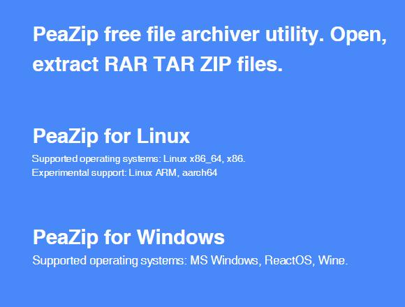
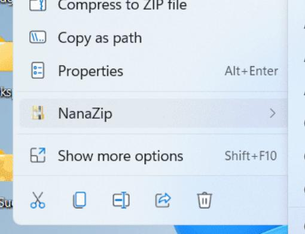
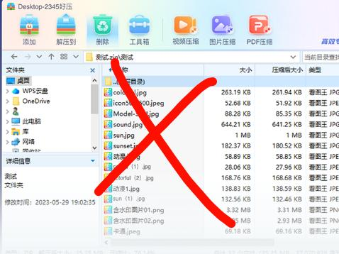

2345 压缩
一句话：千万别用。一边起进程弹窗低俗广告，一边宣传无广告
一句话：千万别用。一边起进程弹窗低俗广告，一边宣传无广告
以下内容来自知乎
1993 年 "RAR" 格式出现了，由于 "RAR" 格式压缩率优于 "ZIP" 所以 WinRAR 迅速的占领了压缩解压软件市场的份额。
1999 年真正的业界良心压缩软件来了，7-ZIP 横空出世，如果说压缩算法养活了WinRAR、WinZIP，则 7-ZIP 养活了一大批软件开发商。
7-ZIP 独创的 "7Z" 算法，拥有极高的压缩率，并且同时兼容支持打开 "ZIP" 和 "RAR" 等格式。这对于当时处于竞争对手的 WinRAR 和 WinZIP 来说，面临着非常大的压力。所以后续也基本没人推荐用 WinZIP 软件，而 WinRAR 宣布中国市场免费，但是有广告。
以下内容原创
除了最新的 Windows 11 系统外，所有的 Windows 系统均不提供自带的压缩软件。
压缩软件事实上有很多，不只局限在 2345 压缩。除了上面提到的 WinRAR 和 7-Zip，还有基于 7-Zip 二次开发的 NanaZip；适合国人的全中文界面的 BandiZip；以及可能大家“被迫”知晓的 360 压缩
无论选择什么压缩软件，记住一句话：不存在既方便上手，还没有广告的压缩软件。想要没有广告，那就选开源的压缩软件，但这免不了自行浏览英文网页，使用英文的安装向导等。想要全中文，那对于没有电脑基础的人来说，不可避免地下载到假冒流氓软件，安装后出现大批广告。